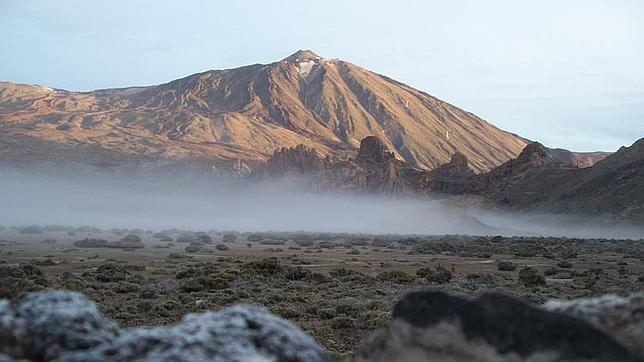
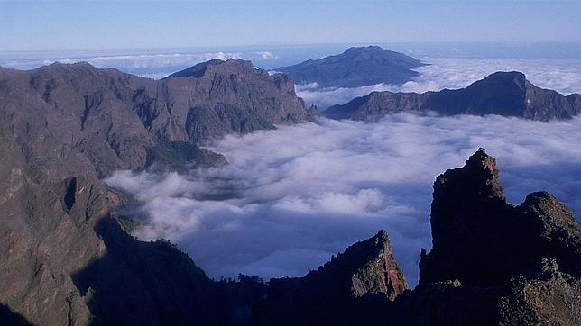
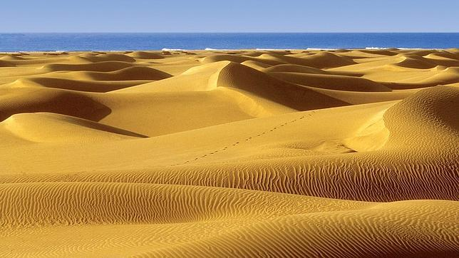
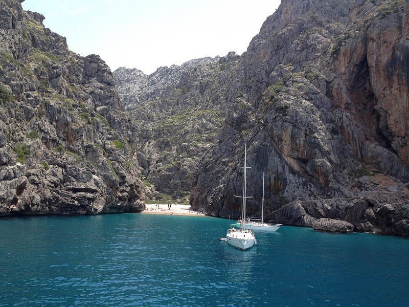

En esta sección de nuestra página vamos a encontrar diferentes imágenes sobre lugares exóticos de España
Parque Nacional del Teide, Tenerife

El pico más alto de España es uno de los monumentos geológicos más extraordinarios del mundo. Esta imponente montaña, situada en la isla de Tenerife, ofrece una de las muestras de conos volcánicos y coladas de lava más espectaculares del mundo y representa el mejor ejemplo de ecosistema de alta montaña de toda Canarias. Su riqueza biológica se debe a sus especies vegetales y a su fauna invertebrada. Tenemos la suerte de que un teleférico nos lleva muy cerca de la cima, ofreciéndonos una espectacular panorámica del terreno sin tener que caminar demasiado. Observarlo al atardecer o incluso cuando las estrellas empiezan a iluminar el cielo, es una experiencia única.
Caldera de Taburiente

La formación geológica de la Caldera de Taburiente, en La Palma, explica el porqué de que a esta se la llame la «Isla Bonita». El parque nacional que la circunda fue declarado como tal allá en 1954 y como Reserva Mundial de la Biosfera en 2002. La Caldera «amamanta» con sus riquísimos recursos hídricos a la isla.
Dunas de Maspalomas

La Reserva Natural Especial de las Dunas de Maspalomas, también en Gran Canaria, ofrece un paisaje propio del vecino desierto del Sahara, solo que sin salir de las Islas. El contraste con el Atlántico da la oportunidad de tomar una instantánea única en el mundo, solo comparable con la que el Parque Natural de Corralejo, en la vecina Fuerteventura, es capaz de regalar.
Una playa encerrada entre acantilados de 200 metros en Mallorca (Sa Calobra)

Fueron miles de años de erosión del curso de agua Torrent de Pareis, que atravesando la Sierra de Tramontana se encuentra con el mar en un rincón de costa de la isla de Mallorca. Pero lo hace de un modo especial. En su último tramo, el Torrent de Pareis atraviesa un lecho de cantos rodados hasta desembocar en un mar azul intenso y transparente, todo entre acantilados que alcanzan los 200 metros de caída. Se llama cala de Sa Calobra, un espacio estrecho, de apenas 25 metros de playa de cantos rodados entre los acantilados.